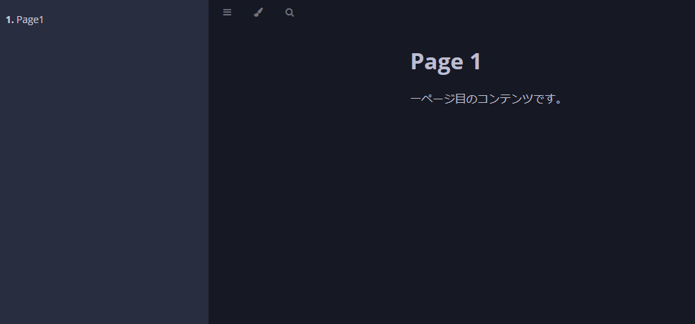

Reconcile
Reconcileはカスタムコントローラーのコアロジックです。 あるべき状態(ユーザーが作成したカスタムリソース)と、実際のシステムの状態を比較し、差分があればそれを埋めるための処理を実行します。
Reconcilerの仕組み
Reconcilerインタフェース
controller-runtimeでは、Reconcile処理はreconcile.Reconcilerインタフェースを実装することになります。
type Reconciler interface {
Reconcile(context.Context, Request) (Result, error)
}
引数のreconcile.Requestには、 このReconcilerが対象とするカスタムリソースのNamespaceとNameが入っています。
戻り値のreconcile.Resultには、
Requeue, RequeueAfterというフィールドがあります。
RequeueにTrueを指定して戻り値を返すと、Reconcile処理がキューに積まれて再度実行されることになります。
RequeueAfterを指定した場合は、指定した時間が経過したあとに再度Reconcile処理が実行されます。
また、Recnocileがエラーを返した場合もReconcile処理がキューに積まれて再度実行されることになるのですが、 失敗するたびに待ち時間が指数関数的に増加します。
Reconcileは複数のリソースを管理しているため、1つのリソースを処理するために多くの時間をかけるべきではありません。
何らかの待ちが発生する場合は、RequeueやRequeueAfterを指定してReconcileをすぐに抜けるようにしましょう。
Reconcileの実行タイミング
Reconcile処理は下記のタイミングで呼び出されます。
- コントローラーの扱うリソースが作成、更新、削除されたとき
- Reconcileに失敗してリクエストが再度キューに積まれたとき
- コントローラーの起動時
- 外部イベントが発生したとき
- キャッシュを再同期するとき(デフォルトでは10時間に1回)
このような様々なタイミングで呼び出されるので、Reconcile処理は必ず冪等(同じリクエストで何度呼び出しても同じ結果になること)でなければなりません。
なお、Reconcile処理はデフォルトでは1秒間に10回以上実行されないように制限されています。
また、これらのイベントが高い頻度で発生する場合は、Reconciliation Loopを並列実行するように設定可能です。
監視対象の制御
Reconcile処理は、コントローラーの扱うリソースが作成、更新、削除されたときに呼び出されると説明しました。 「コントローラーの扱うリソース」を指定するために、NewControllerManagedBy関数を利用します。
// SetupWithManager sets up the controller with the Manager.
func (r *MarkdownViewReconciler) SetupWithManager(mgr ctrl.Manager) error {
return ctrl.NewControllerManagedBy(mgr).
For(&viewv1.MarkdownView{}).
Owns(&corev1.ConfigMap{}).
Owns(&appsv1.Deployment{}).
Owns(&corev1.Service{}).
Complete(r)
}
For
ForにはこのコントローラーのReconcile対象となるリソースの型を指定します。
今回はMarkdownViewカスタムリソースを指定します。 これによりMarkdownViewリソースの作成・変更・削除がおこなわれると、Reconcile関数が呼び出されることになります。 そして、Reconcile関数の引数で渡されるRequestは、MarkdownViewの情報になります。
なお、Forに指定できるリソースは1種類だけです。
Owns
Ownsにはこのコントローラーが生成するリソースの型を指定します。Forとは異なり、Ownsは複数指定が可能です。
MarkdownViewコントローラーは、ConfigMap, Deployment, Serviceリソースを作成することになるため、これらをOwnsに指定します。
これにより、MarkdownViewコントローラーが作成したConfigMap, Deployment, Serviceリソースに何らかの変更が発生した際にReconcileが呼び出されるようになります。
ただしこのとき、コントローラーが作成したリソースのownerReferencesにMarkdownViewリソースを指定しなければなりません。
ownerReferencesの設定方法はリソースの削除)を参照してください。
なお、Ownsに指定したリソースの変更によってReconcileが呼び出された場合には、Ownsに指定したリソースの名前がRequestに入るわけではありません。
それらのリソースのownerであるMarkdownViewリソースの名前が入ります。
Reconcileの実装
いよいよReconcileの本体を実装します。
Reconcile処理の流れ
Reconcile処理のおおまかな流れを確認しましょう。
// Reconcile is part of the main kubernetes reconciliation loop which aims to
// move the current state of the cluster closer to the desired state.
// TODO(user): Modify the Reconcile function to compare the state specified by
// the MarkdownView object against the actual cluster state, and then
// perform operations to make the cluster state reflect the state specified by
// the user.
//
// For more details, check Reconcile and its Result here:
// - https://pkg.go.dev/sigs.k8s.io/controller-runtime@v0.18.4/pkg/reconcile
func (r *MarkdownViewReconciler) Reconcile(ctx context.Context, req ctrl.Request) (ctrl.Result, error) {
logger := log.FromContext(ctx)
var mdView viewv1.MarkdownView
err := r.Get(ctx, req.NamespacedName, &mdView)
if errors.IsNotFound(err) {
return ctrl.Result{}, nil
}
if err != nil {
logger.Error(err, "unable to get MarkdownView", "name", req.NamespacedName)
return ctrl.Result{}, err
}
if !mdView.ObjectMeta.DeletionTimestamp.IsZero() {
return ctrl.Result{}, nil
}
err = r.reconcileConfigMap(ctx, mdView)
if err != nil {
result, err2 := r.updateStatus(ctx, mdView)
logger.Error(err2, "unable to update status")
return result, err
}
err = r.reconcileDeployment(ctx, mdView)
if err != nil {
result, err2 := r.updateStatus(ctx, mdView)
logger.Error(err2, "unable to update status")
return result, err
}
err = r.reconcileService(ctx, mdView)
if err != nil {
result, err2 := r.updateStatus(ctx, mdView)
logger.Error(err2, "unable to update status")
return result, err
}
return r.updateStatus(ctx, mdView)
}
Reconcileの引数として渡ってきたRequestを利用して、対象となるMarkdownViewリソースの取得をおこないます。
ここでMarkdownViewリソースが存在しなかった場合は、MarkdownViewリソースが削除されたということです。 終了処理をおこなって関数を抜けましょう。(ここではメトリクスの削除処理をおこなっています)
次にDeletionTimestampの確認をしています。
DeletionTimestampがゼロでない場合は、対象のリソースの削除が開始されたということです。(詳しくはリソースの削除を参照してください。)
この場合もすぐに関数を抜けましょう。
そして、reconcileConfigMap, reconcileDeployment, reconcileServiceで、それぞれConfigMap, Deployment, Serviceリソースの作成・更新処理をおこないます。
エラーが発生した場合と、Reconcile処理の最後にupdateStatusでステータスの更新をおこないます。
また、Reconcileの中ではlogger := log.FromContext(ctx)を呼び出してコンテキストからロガーを取得し、ログの出力をおこなうことができます。
このロガーを利用すると、Reconcile対象のオブジェクトのNamespaceやNameなどの情報が自動的にログに埋め込まれます。
以下の記事に詳しく記載しましたので、参考にしてください。
reconcileConfigMap
reconcileConfigMapでは、MarkdownViewリソースに記述されたMarkdownの内容をもとに、ConfigMapリソースを作成します。
func (r *MarkdownViewReconciler) reconcileConfigMap(ctx context.Context, mdView viewv1.MarkdownView) error {
logger := log.FromContext(ctx)
cm := &corev1.ConfigMap{}
cm.SetNamespace(mdView.Namespace)
cm.SetName("markdowns-" + mdView.Name)
op, err := ctrl.CreateOrUpdate(ctx, r.Client, cm, func() error {
if cm.Data == nil {
cm.Data = make(map[string]string)
}
for name, content := range mdView.Spec.Markdowns {
cm.Data[name] = content
}
return nil
})
if err != nil {
logger.Error(err, "unable to create or update ConfigMap")
return err
}
if op != controllerutil.OperationResultNone {
logger.Info("reconcile ConfigMap successfully", "op", op)
}
return nil
}
ここでは、クライアントの使い方で紹介したCreateOrUpdate関数を利用しています。
reconcileDeployment, reconcileService
reconcileDeployment, reconcileServiceでは、それぞれDeploymentとServiceリソースを作成します。
reconcileConfigMapと同様にCreateOrUpdateを利用したリソースの作成も可能なのですが、
DeploymentやServiceリソースはフィールド数が多いこともあり、適切に差分を検出してリソースを更新することが面倒だったりします。
そこで今回は、クライアントの使い方で紹介したApplyConfigurationを利用したServer-Side Apply方式でリソースを作成します。
func (r *MarkdownViewReconciler) reconcileDeployment(ctx context.Context, mdView viewv1.MarkdownView) error {
logger := log.FromContext(ctx)
depName := "viewer-" + mdView.Name
viewerImage := "peaceiris/mdbook:latest"
if len(mdView.Spec.ViewerImage) != 0 {
viewerImage = mdView.Spec.ViewerImage
}
dep := appsv1apply.Deployment(depName, mdView.Namespace).
WithLabels(map[string]string{
"app.kubernetes.io/name": "mdbook",
"app.kubernetes.io/instance": mdView.Name,
"app.kubernetes.io/created-by": "markdown-view-controller",
}).
WithSpec(appsv1apply.DeploymentSpec().
WithReplicas(mdView.Spec.Replicas).
WithSelector(metav1apply.LabelSelector().WithMatchLabels(map[string]string{
"app.kubernetes.io/name": "mdbook",
"app.kubernetes.io/instance": mdView.Name,
"app.kubernetes.io/created-by": "markdown-view-controller",
})).
WithTemplate(corev1apply.PodTemplateSpec().
WithLabels(map[string]string{
"app.kubernetes.io/name": "mdbook",
"app.kubernetes.io/instance": mdView.Name,
"app.kubernetes.io/created-by": "markdown-view-controller",
}).
WithSpec(corev1apply.PodSpec().
WithContainers(corev1apply.Container().
WithName("mdbook").
WithImage(viewerImage).
WithImagePullPolicy(corev1.PullIfNotPresent).
WithCommand("mdbook").
WithArgs("serve", "--hostname", "0.0.0.0").
WithVolumeMounts(corev1apply.VolumeMount().
WithName("markdowns").
WithMountPath("/book/src"),
).
WithPorts(corev1apply.ContainerPort().
WithName("http").
WithProtocol(corev1.ProtocolTCP).
WithContainerPort(3000),
).
WithLivenessProbe(corev1apply.Probe().
WithHTTPGet(corev1apply.HTTPGetAction().
WithPort(intstr.FromString("http")).
WithPath("/").
WithScheme(corev1.URISchemeHTTP),
),
).
WithReadinessProbe(corev1apply.Probe().
WithHTTPGet(corev1apply.HTTPGetAction().
WithPort(intstr.FromString("http")).
WithPath("/").
WithScheme(corev1.URISchemeHTTP),
),
),
).
WithVolumes(corev1apply.Volume().
WithName("markdowns").
WithConfigMap(corev1apply.ConfigMapVolumeSource().
WithName("markdowns-" + mdView.Name),
),
),
),
),
)
obj, err := runtime.DefaultUnstructuredConverter.ToUnstructured(dep)
if err != nil {
return err
}
patch := &unstructured.Unstructured{
Object: obj,
}
var current appsv1.Deployment
err = r.Get(ctx, client.ObjectKey{Namespace: mdView.Namespace, Name: depName}, ¤t)
if err != nil && !errors.IsNotFound(err) {
return err
}
currApplyConfig, err := appsv1apply.ExtractDeployment(¤t, "markdown-view-controller")
if err != nil {
return err
}
if equality.Semantic.DeepEqual(dep, currApplyConfig) {
return nil
}
err = r.Patch(ctx, patch, client.Apply, &client.PatchOptions{
FieldManager: "markdown-view-controller",
Force: pointer.Bool(true),
})
if err != nil {
logger.Error(err, "unable to create or update Deployment")
return err
}
logger.Info("reconcile Deployment successfully", "name", mdView.Name)
return nil
}
func (r *MarkdownViewReconciler) reconcileService(ctx context.Context, mdView viewv1.MarkdownView) error {
logger := log.FromContext(ctx)
svcName := "viewer-" + mdView.Name
svc := corev1apply.Service(svcName, mdView.Namespace).
WithLabels(map[string]string{
"app.kubernetes.io/name": "mdbook",
"app.kubernetes.io/instance": mdView.Name,
"app.kubernetes.io/created-by": "markdown-view-controller",
}).
WithSpec(corev1apply.ServiceSpec().
WithSelector(map[string]string{
"app.kubernetes.io/name": "mdbook",
"app.kubernetes.io/instance": mdView.Name,
"app.kubernetes.io/created-by": "markdown-view-controller",
}).
WithType(corev1.ServiceTypeClusterIP).
WithPorts(corev1apply.ServicePort().
WithProtocol(corev1.ProtocolTCP).
WithPort(80).
WithTargetPort(intstr.FromInt(3000)),
),
)
obj, err := runtime.DefaultUnstructuredConverter.ToUnstructured(svc)
if err != nil {
return err
}
patch := &unstructured.Unstructured{
Object: obj,
}
var current corev1.Service
err = r.Get(ctx, client.ObjectKey{Namespace: mdView.Namespace, Name: svcName}, ¤t)
if err != nil && !errors.IsNotFound(err) {
return err
}
currApplyConfig, err := corev1apply.ExtractService(¤t, "markdown-view-controller")
if err != nil {
return err
}
if equality.Semantic.DeepEqual(svc, currApplyConfig) {
return nil
}
err = r.Patch(ctx, patch, client.Apply, &client.PatchOptions{
FieldManager: "markdown-view-controller",
Force: pointer.Bool(true),
})
if err != nil {
logger.Error(err, "unable to create or update Service")
return err
}
logger.Info("reconcile Service successfully", "name", mdView.Name)
return nil
}
ステータスの更新
最後に、MarkdownViewリソースの状況をユーザーに知らせるためのステータスを更新します。
func (r *MarkdownViewReconciler) updateStatus(ctx context.Context, mdView viewv1.MarkdownView) (ctrl.Result, error) {
meta.SetStatusCondition(&mdView.Status.Conditions, metav1.Condition{
Type: viewv1.TypeMarkdownViewAvailable,
Status: metav1.ConditionTrue,
Reason: "OK",
})
meta.SetStatusCondition(&mdView.Status.Conditions, metav1.Condition{
Type: viewv1.TypeMarkdownViewDegraded,
Status: metav1.ConditionFalse,
Reason: "OK",
})
var cm corev1.ConfigMap
err := r.Get(ctx, client.ObjectKey{Namespace: mdView.Namespace, Name: "markdowns-" + mdView.Name}, &cm)
if errors.IsNotFound(err) {
meta.SetStatusCondition(&mdView.Status.Conditions, metav1.Condition{
Type: viewv1.TypeMarkdownViewDegraded,
Status: metav1.ConditionTrue,
Reason: "Reconciling",
Message: "ConfigMap not found",
})
meta.SetStatusCondition(&mdView.Status.Conditions, metav1.Condition{
Type: viewv1.TypeMarkdownViewAvailable,
Status: metav1.ConditionFalse,
Reason: "Reconciling",
})
} else if err != nil {
return ctrl.Result{}, err
}
var svc corev1.Service
err = r.Get(ctx, client.ObjectKey{Namespace: mdView.Namespace, Name: "viewer-" + mdView.Name}, &svc)
if errors.IsNotFound(err) {
meta.SetStatusCondition(&mdView.Status.Conditions, metav1.Condition{
Type: viewv1.TypeMarkdownViewDegraded,
Status: metav1.ConditionTrue,
Reason: "Reconciling",
Message: "Service not found",
})
meta.SetStatusCondition(&mdView.Status.Conditions, metav1.Condition{
Type: viewv1.TypeMarkdownViewAvailable,
Status: metav1.ConditionFalse,
Reason: "Reconciling",
})
} else if err != nil {
return ctrl.Result{}, err
}
var dep appsv1.Deployment
err = r.Get(ctx, client.ObjectKey{Namespace: mdView.Namespace, Name: "viewer-" + mdView.Name}, &dep)
if errors.IsNotFound(err) {
meta.SetStatusCondition(&mdView.Status.Conditions, metav1.Condition{
Type: viewv1.TypeMarkdownViewDegraded,
Status: metav1.ConditionTrue,
Reason: "Reconciling",
Message: "Deployment not found",
})
meta.SetStatusCondition(&mdView.Status.Conditions, metav1.Condition{
Type: viewv1.TypeMarkdownViewAvailable,
Status: metav1.ConditionFalse,
Reason: "Reconciling",
})
} else if err != nil {
return ctrl.Result{}, err
}
result := ctrl.Result{}
if dep.Status.AvailableReplicas == 0 {
meta.SetStatusCondition(&mdView.Status.Conditions, metav1.Condition{
Type: viewv1.TypeMarkdownViewAvailable,
Status: metav1.ConditionFalse,
Reason: "Unavailable",
Message: "AvailableReplicas is 0",
})
result = ctrl.Result{Requeue: true}
}
err = r.Status().Update(ctx, &mdView)
return result, err
}
ここでは、Reconcile処理で作成したConfigMap, Service, Deploymentリソースをチェックし、その状態に応じてMarkdownViewリソースの ステータスを決定しています。
動作確認
Reconcile処理の実装が完了したら動作確認してみましょう。 カスタムコントローラーの動作確認の手順通りにカスタムコントローラーをデプロイし、 サンプルのMarkdownViewリソースを適用します。
Deployment, Service, ConfigMapリソースが生成され、MarkdownViewリソースの状態がHealthyになっていることを確認しましょう。
$ kubectl get deployment,service,configmap
NAME READY UP-TO-DATE AVAILABLE AGE
deployment.apps/viewer-markdownview-sample 1/1 1 1 177m
NAME TYPE CLUSTER-IP EXTERNAL-IP PORT(S) AGE
service/viewer-markdownview-sample ClusterIP 10.96.162.90 <none> 80/TCP 177m
NAME DATA AGE
configmap/markdowns-markdownview-sample 2 177m
$ kubectl get markdownview markdownview-sample
NAME REPLICAS AVAILABLE
markdownview-sample 1 True
次にローカル環境から作成されたサービスにアクセスするため、Port Forwardをおこないます。
$ kubectl port-forward svc/viewer-markdownview-sample 3000:80
最後にブラウザでhttp://localhost:3000にアクセスしてください。
以下のようにレンダリングされたMarkdownが表示されれば成功です。
